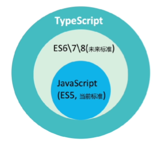
script好理解，就是脚本，而type则是来自typing（强类型），有以下几个优势
typing: 强类型
简单来说：Typescript就是JavaScript 的类型化超集
注：Typescript无法在浏览器中运行，需要先编译成JavaScript
官网：https://www.typescriptlang.org/
安装ts编译器(前提：已安装node，若没有，前往：nodejs.org，下载安装LTS版本即可)npm install -g typescript
推荐使用编辑器：Visual Studio Code，地址：https://code.visualstudio.com/
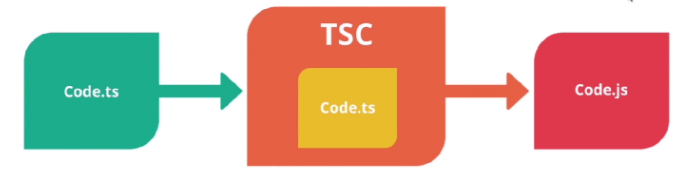
1 |
|
tsc 常用编译参数如下表所示：
| 编译参数 | 说明 |
|---|---|
| –help | 显示帮助信息 |
| –module | 载入扩展模块 |
| –target | 设置 ECMA 版本 |
| –declaration | 额外生成一个 .d.ts 扩展名的文件。tsc a.ts --declaration命令会生成 a.d.ts、a.js 两个文件 |
| –removeComments | 删除文件的注释 |
| –out | 编译多个文件并合并到一个输出的文件 |
| –sourcemap | 生成一个 sourcemap (.map) 文件。sourcemap 是一个存储源代码与编译代码对应位置映射的信息文件 |
| –module noImplicitAny | 在表达式和声明上有隐含的 any 类型时报错 |
| –watch | 在监视模式下运行编译器。会监视输出文件，在它们改变时重新编译 |
JavaScript中作用域一般只分为全局函数两种，但是使用let和const声明的变量则有块级作用域
声明变量：
var：作用域为函数内或全局
let：块级作用域
声明常量：
const 块级作用域
准确来说目前JS数据类型总共有8种：
7种基本（原始）类型：String Number Boolean Null Undefined Symbol BigInt
1种引用（对象）类型：Object
Object又可以细分为： Object本身 Array Date Function RegExp
JS的类型判断方式
- Object.prototype.toString.call() 方法,这个方法可以判断任何的类型,返回的是一个字符串
- typeof() 方法，这个方法用来准确判断基本类型（除了null），返回的也是一个字符串
- instanceof() 方法，这个方法用来判断对象类型,返回一个布尔值，如果判断基本类型，那么会输出false
- 特定的判断方法
1).数组的isArray() 方法，判断是否为数组，返回true或者false.
2).isNaN() 方法，在 JavaScript 中，NaN 是一个不合法的数字。 Number.isNaN () 方法用于判断传递的值是否为 NaN，并且检查其类型是否为 Number，如果值为 NaN 且类型为 Number，则返回 true，否则返回 false
ts数据类型，新增了如下5种基本数据类型：tuple（元组），enum（枚举），void，never，any
3种高级类型：union（组合类型）、nullable（可空类型）、literal（预定义类型）
number 数字
对数字的表示只有一个很笼统的number来表示，即能表示整数，也能表示浮点数，甚至还能表示负数
如：1、5.3、-10
string 字符串
使用单引号、双引号或者反引号创建
如：’hello’、”hello”、`hello`
boolean 布尔
表示真假，只有true和false两个值
array 数组
创建数组可以采用两种方式：
1）字面量：[]
2）new对象：new Array()
tuple 元组
固定长度和类型的array
union 联合
1 | // 联合类型 |
literal 字面量
1 | // 字面量 |
1 | enum Color { |
1 | // any |
void只在ts中存在，表示不存在，undefined表示未定义，never用来控制逻辑流程，表示永远不可能执行完成。
1 | let message: any |
使用类型断言一定要对使用的变量类型有清楚的了解，否则会导致各种不可预料的错误
在 TypeScript里，我们可以通过 function 字面量和箭头函数的形式定义函数，如下所示：
1 | function add() {} |
还可以显式指定函数参数和返回值的类型，如下所示：
1 | const add = (a: number, b: number): number => { |
如上述示例中，参数名后的 :number 表示参数类型都是数字类型，圆括号后的 : number则表示返回值类型也是数字类型。
下面介绍一下返回值类型和参数类型
返回值类型
在 JavaScript 中，如果一个函数可以没有显式 return，此时函数的返回值是 undefined：
1 | function func() { |
需要注意的是，在 TypeScript 中，如果我们显式声明函数的返回值类型为 undfined，会报错：
1 | function fn(): undefined { |
此时，正确的做法是使用void 类型来表示函数没有返回值的类型（void 类型很少用到，这基本是唯一有用的场景），示例如下：
1 | function func(): void { |
我们可以使用类似定义箭头函数的语法来表示函数类型的参数和返回值类型，此时 => 仅仅用来定义一个函数类型而不是实现这个函数。
需要注意的是，这里的 =>与 ES6 中箭头函数的 => 有所不同。TypeScript 函数类型中的 => 用来表示函数的定义，其左侧是函数的参数类型，右侧是函数的返回值类型；而 ES6 中的 => 是函数的实现。
如下示例中，先定义了一个函数类型（这里使用了类型别名 type），并且使用箭头函数实现了这个类型：
1 | type Adder = (a: number, b: number) => number; // TypeScript 函数类型定义 |
在对象中，除了使用这种声明语法，我们还可以使用类似对象属性的简写语法来声明函数类型的属性，如下代码所示：
1 | interface Entity { |
在某种意义上来说，这两种形式都是等价的。但是很多时候，我们不必或者不能显式地指明返回值的类型，这就涉及可缺省和可推断的返回值类型
可缺省和可推断的返回值类型
函数返回值的类型可以在 TypeScript 中被推断出来，即可缺省
函数内是一个相对独立的上下文环境，我们可以根据入参对值加工计算，并返回新的值。从类型层面看，我们也可以通过类型推断加工计算入参的类型，并返回新的类型，如下所示：
1 | function func(one: string, two: number) { |
参数类型
了解了定义函数的基本语法以及返回值类型后，再来详细看一下可选参数、默认参数、剩余参数的几个特性。
可选参数和默认参数
在实际工作中，我们可能经常碰到函数参数可传可不传的情况，当然 TypeScript 也支持这种函数类型表达，如下代码所示：
1 | function func(x?: string) { |
在上述代码中，我们在类型标注的 : 前添加 ? 表示 func 函数的参数 x 是可缺省的
也就是说参数 x 的类型可能是 undefined（不传入实参）类型或者是 string 类型（传入 ‘777’ 实参），那是不是意味着可缺省和类型是 undefined 等价呢？
1 | function func1(x?: string) { |
这里的 ?: 表示参数可以缺省、可以不传，也就是说调用函数时，我们可以不显式传入参数。但是，如果我们声明了参数类型为 xxx | undefined，就表示函数参数是不可缺省且类型必须是 xxx 或者 undfined
因此，在上述代码中，func2 函数如果不显示传入函数的参数，TypeScript 就会报一个 ts(2554) 的错误，即函数需要 1 个参数，但是我们只传入了 0 个参数。
在 ES6 中支持函数默认参数的功能，而 TypeScript 会根据函数的默认参数的类型来推断函数参数的类型，示例如下：
1 | function func(x = '777') { |
在上述示例中，根据函数的默认参数 ‘777’ ，TypeScript 推断出了 x 的类型为 string | undefined
剩余参数
在 ES6 中，JavaScript 支持函数参数的剩余参数，它可以把多个参数收集到一个变量中。同样，在TypeScript 中也支持这样的参数类型定义，如下代码所示：
1 | function sum(...nums: number[]) { |
在上述代码中，sum 是一个求和的函数，…nums 将函数的所有参数收集到了变量 nums 中，而 nums 的类型应该是 number[]，表示所有被求和的参数是数字类型。因此，sum(1, ‘2’) 抛出了一个 ts(2345) 的错误，因为参数 ‘2’ 并不是 number 类型。
如果这么写就可以：
1 | function sum(...nums: (number | string)[]): number { |
函数的每一个参数的类型就是联合类型 number | string，因此 sum(1, ‘2’, 3) 的类型检查也就通过了。
this
众所周知，在 JavaScript 中，函数 this 的指向一直是一个令人头痛的问题。因为 this 的值需要等到函数被调用时才能被确定，更别说通过一些方法还可以改变 this 的指向。也就是说 this 的类型不固定，它取决于执行时的上下文。
但是，使用了 TypeScript 后，我们就不用担心这个问题了。通过指定 this 的类型（严格模式下，必须显式指定 this 的类型），当我们错误使用了 this，TypeScript 就会提示我们，如下代码所示：
1 | function func() { |
在上述代码中，如果我们直接调用 say 函数，this 应该指向全局 window 或 global（Node 中）。但是，在 strict 模式下的 TypeScript 中，它会提示 this 的类型是 any，此时就需要我们手动显式指定类型了。
在 TypeScript 中，我们只需要在函数的第一个参数中声明 this 指代的对象（即函数被调用的方式）即可，比如最简单的作为对象的方法的 this 指向，如下代码所示：
1 | function func(this: Window, name: string) { |
在上述代码中，我们在 window 对象上增加 say 的属性为函数 say。那么调用 window.say() 时，this 指向即为 window 对象。
调用 obj.say() 后，此时 TypeScript 检测到 this 的指向不是 window，于是抛出了如下所示的一个 ts(2684) 错误。
需要注意的是，如果我们直接调用 func()，this 实际上应该指向全局变量 window，但是因为 TypeScript 无法确定 func 函数被谁调用，所以将 this 的指向默认为 void，也就提示了一个 ts(2684) 错误。 如下所示：
1 | func('777'); // error TS2684: The 'this' context of type 'void' is not assignable to method's 'this' of type 'Window'. |
此时，我们可以通过调用 window.say() 来避免这个错误，这也是一个安全的设计。因为在 JavaScript 的严格模式下，全局作用域函数中 this 的指向是 undefined。
同样，定义对象的函数属性时，只要实际调用中 this 的指向与指定的 this 指向不同，TypeScript 就能发现 this 指向的错误，示例代码如下：
1 | interface Person { |
函数重载
JavaScript 是一门动态语言，针对同一个函数，它可以有多种不同类型的参数与返回值，这就是函数的多态。
而在 TypeScript 中，也可以相应地表达不同类型的参数和返回值的函数，如下所示：
1 | function convert(x: string | number | null): string | number | -1 { |
在上述代码中，我们把 convert 函数的 string 类型的值转换为 number 类型，number 类型转换为 string 类型，而将 null 类型转换为数字 -1。此时， x1、x2、x3 的返回值类型都会被推断成 string | number
那么，有没有一种办法可以更精确地描述参数与返回值类型约束关系的函数类型呢？有，这就是函数重载。如下示例中先定义了三种各不相同的函数类型列表，并描述了不同的参数类型对应不同的返回值类型，而后才是函数的实现：
1 | function convert(x: string): number; |
类型谓词（is）
在 TypeScript 中，函数还支持另外一种特殊的类型描述，如下示例 ：
1 | function isString(s: unknown): s is string { |
在上述代码中，在添加返回值类型的地方，通过“参数名 + is + 类型”的格式明确表明了参数的类型，进而引起类型缩小，所以类型谓词函数的一个重要的应用场景是实现自定义类型守卫
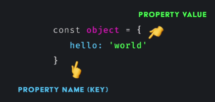
ts中无法访问对象未定义的属性或方法
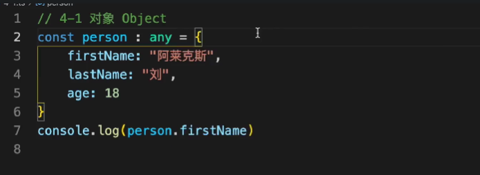
若是将对象显示定义为any，那么就和js一样，可以访问未定义的属性和方法
未加限制下的函数，可以任意入参
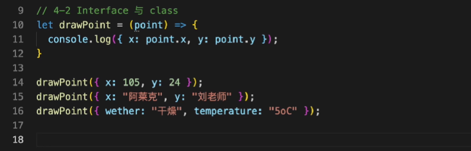
通过接口限制后的函数
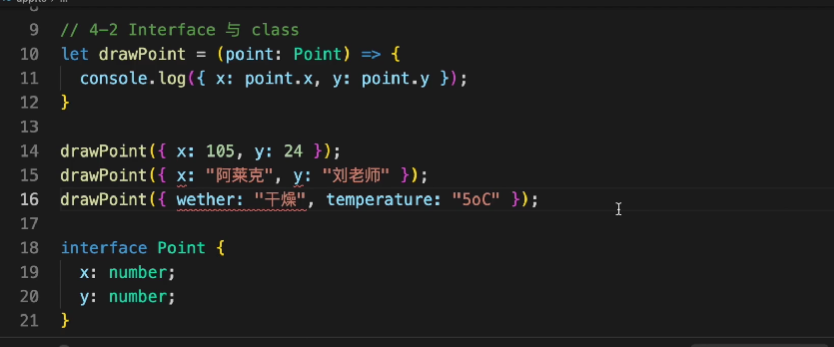
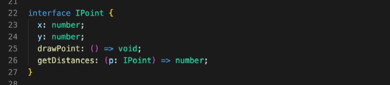
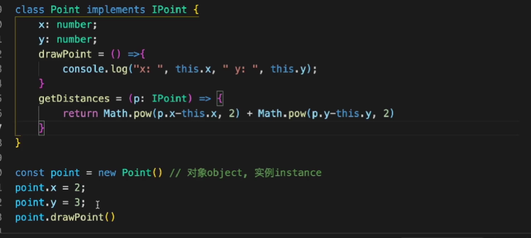
使用构造函数
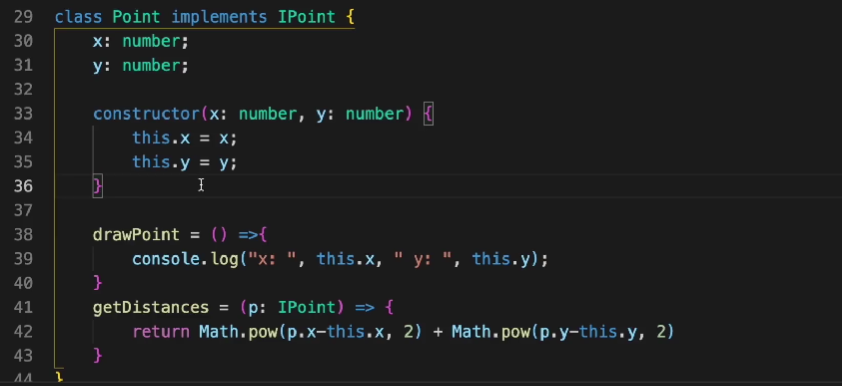
参数初始化时必须传递
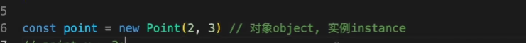
加上问号或者给予默认值，变为可选性，初始化如不知道参数可以不传递
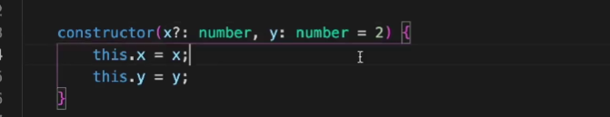
使用访问修饰符，注意此时参数不允许可选，只允许赋初值
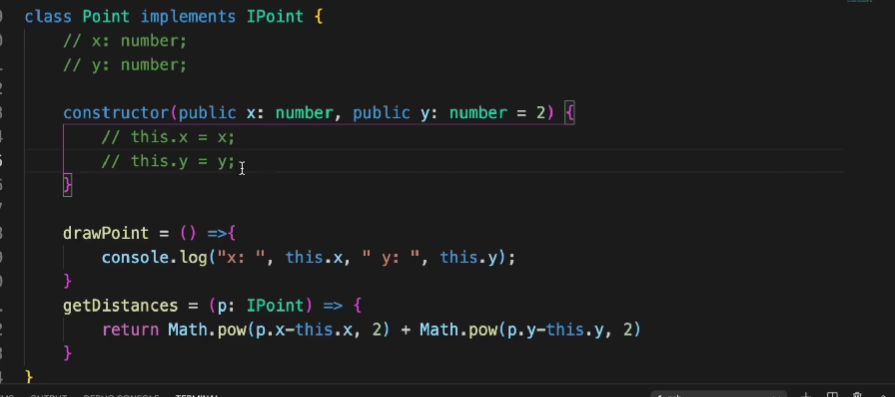
限制外部对内部方法和属性的访问，默认情况下都为公有。
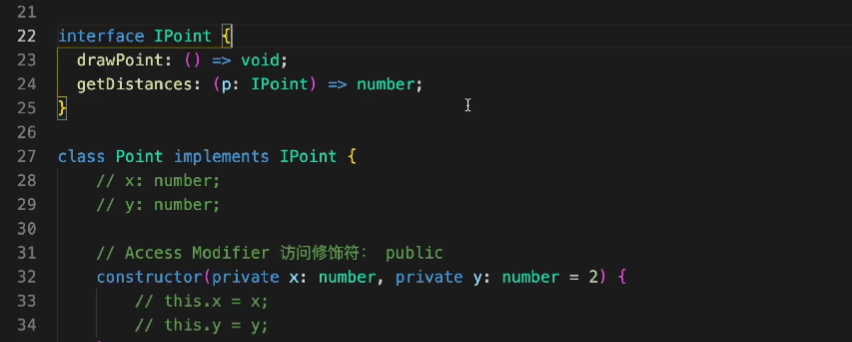
接口中定义的都是共有属性和方法，一旦改为私有，需要在接口进行相应修改，最简单的方式就是删除对应的。
getter和setter用于保留私有性的同时，允许外部对私有变量的访问（就是提供给外部获取和设置内部值的方法）
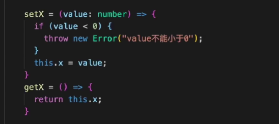
接口改造
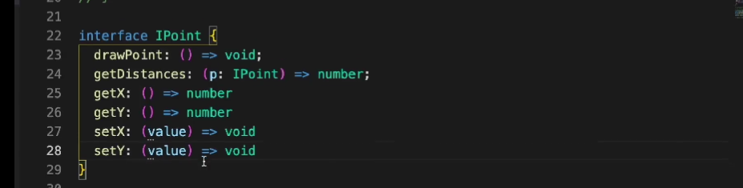
通过geter取值
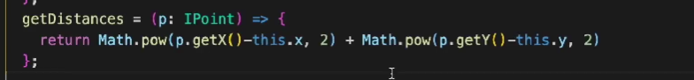
便捷写法
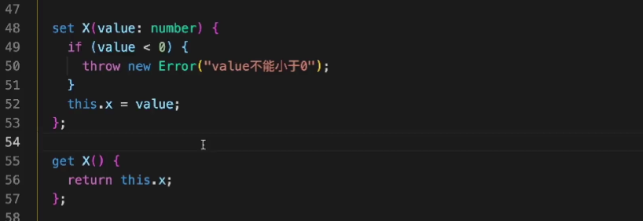
使用
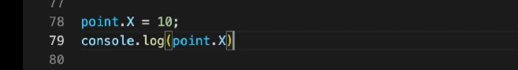
接口也需要对应修改
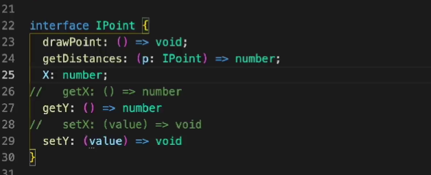
便捷写法需要es5以上才支持，通常习惯上将私有变量前加上下划线’_’，报错如下：
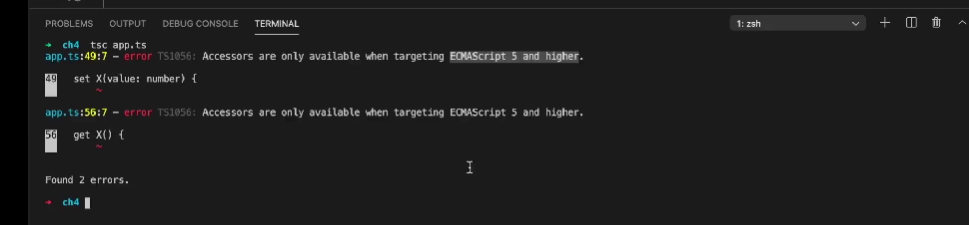
错误处理：
tsc -t es5 xxx.ts
使用关键字export导出模块，import导入模块
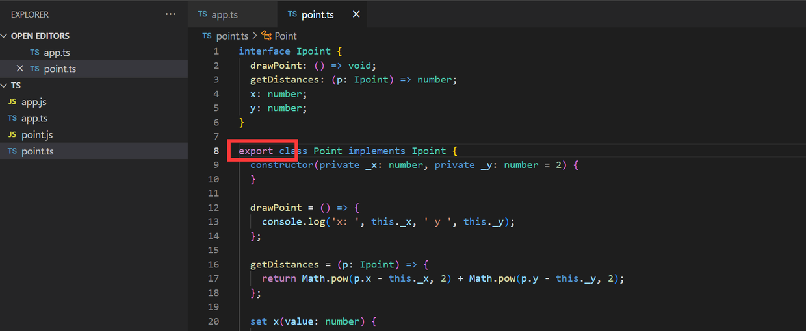
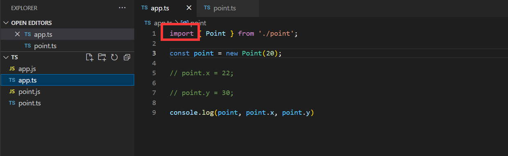
若是使用export default导出，导入时不需要花括号。
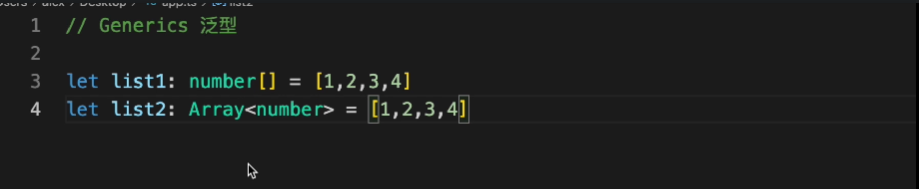
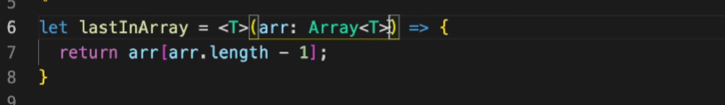
不一定要使用T，可以是任意字符，只是约定俗成用T，也可以简单写成如下字面量形式
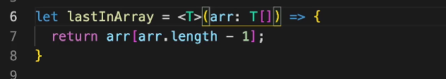
可以指定输出类型
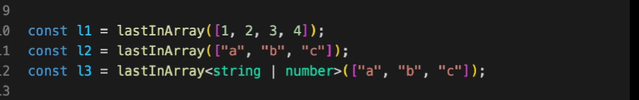
多个类型处理
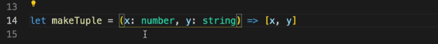
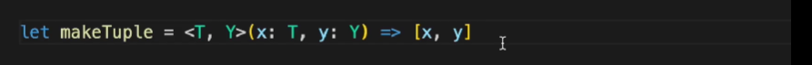
同样允许显示定义类型
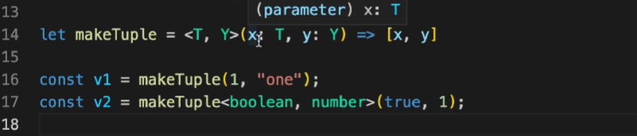
设置默认类型
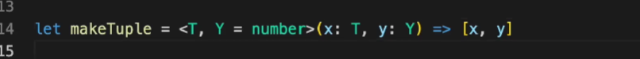
此时可以省略第二个泛型的定义
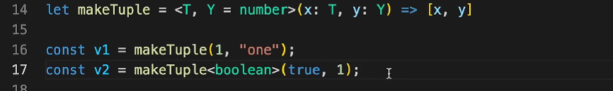